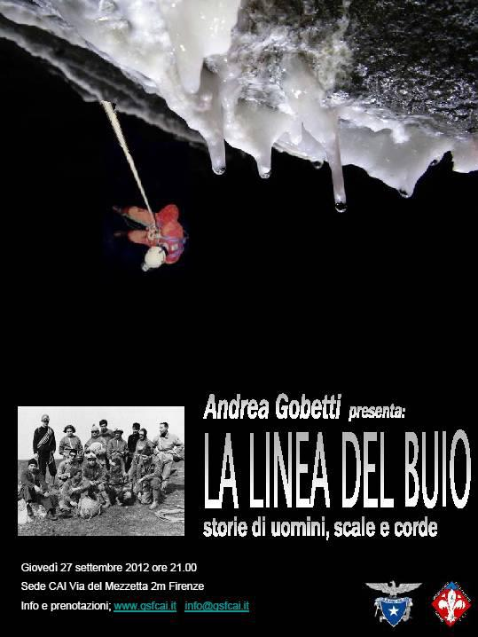
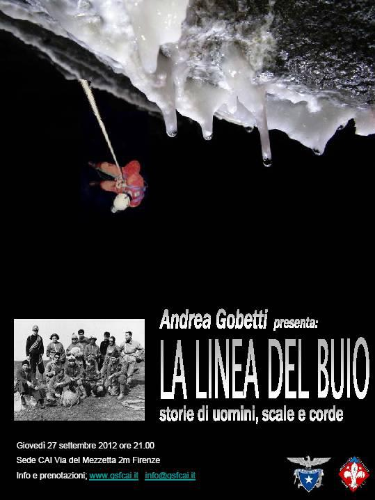

Welcome to Constantina's page
..work in

|
My country

-
Education
Ph.D. in Atomic and Molecular Spectroscopy. Thesis title: " Adaptive detection of arbitrarily shaped ultrashort quantum light states"
Degree in Physics (2.1 Upper 2nd class honours)
Publications
- Phys. Rev. Lett. 109, 053602 (2012). “Adaptive detection of arbitrarily shaped ultrashort quantum light states”, by C. Polycarpou, K. Cassemiro, G. Venturi, A. Zavatta, M. Bellini.
- Research in Optical Sciences, OSA Technical Digest , paper QT5A.3., 2012.
- Frontiers in Optics Conference, OSA Technical Digest (online), paper FW4J.2., 2012.
- International Conference on Quantum Information, OSA Technical Digest (CD), paper QMG2, 2011.
- Proc. SPIE 8072, Photon Counting Applications, Quantum Optics, and Quantum Information Transfer and Processing III, 80720P; doi:10.1117/12.887192, May 06, 2011.
Press releases
- Focus: “Measuring the Shape of a Photon”, DOI: 10.1103/Physics.5.86, Aug 3, 2012.
- Physicsworld: “Photon shape could be used to encode quantum information”, Aug 10, 2012.
- New Scientist: “Quantum “alphabet” easier to read with laser booster”, Aug 16, 2012.
- 2Physics: “The shape of quantum light”, Sep 16, 2012.
- La repubblica: “Il Cnr misura forma della luce”, Aug 1, 2012.
- ANSA (Scienza & Tecnica): “Misurata la forma della luce”, Aug 1, 2012. La Nazione, Sept 15,2012.
-
Skills/Experience
Programming Languages
Javascript, Python, Matlab.
Other software
HTML/CSS (basic), Excel and MS Office (advanced), Origin, Mathematica, Gimp, Reason 5.
Human Languages
English, Greek, Italian, Spanish, French -
Conferences-Honours/Awards
Conferences - schools
- March 2014. V IMPPC Annual Conference and 4DCellFate Workshop: Integrative and Computational Biology Joint symposium, Barcelona, Spain.
- Jul 2013. Quantitative Population Genetics, Cargèse, France.
- Jun 2013. QIPC Conference, member of the support team. Florence, Italy.
- Sep 2012. International School of Physics and Technology of Matter. Poster presentation: “Measuring the shape of a single photon”. Otranto, Italy.
- Jul 2012 From Nonlinear Physics to Biology and Medicine, Cargèse, Corsica, France.
- Jul 2011. Quantum Information and Coherence. Poster presentation: “High Fidelity Noiseless Amplification by photon addition and subtraction. Univ. of Strathclyde, Glasgow, UK.
- May 2011 Fotonica 2011, Talk on “High fidelity noiseless amplification”. Genova, Italy.
- Mar 2010. WE-Heraeus Seminar on Quantum Communication based on Integrated Optics. 1st poster presentation as a PhD student and poster prize. Bad Honnef, Germany.
- Jan 2008. Advanced Winter School on the Mathematical foundations of control and quantum information theory in CIEM Castro Urdiales, Spain.
- Jul 2007. Bose- Einstein Condensation summer school, at FORTH, Crete.
Honours- Awards
- Travel grant from DAMOP Subdivision of APS, for the APS meeting in June 2013, Canada.
- Grant to attend the “Quantitative population genetics” summer school in France, July 2013.
- Poster prize at the 453. Heraeus Seminar: voted by the participants and organizers to be among the 3 best presentations of the conference.
- Grant for top advanced undergraduate student from Onassis foundation to attend the “BEC” summer school in Crete.
- Award from Physics Dep., A.U.Th. for top score in qualifying exams for Cypriots of my year.
- Top student scholarship from the Government of Cyprus.
- Graduated from High school with an average of 19.818 out of 20, awarded “best student” awards in Physics and French, and was “top student” of my graduating year 2000-’01.
Poster prize

DBS checked

Interests
Electronic music
- Soundlcloud
Photography/Design
Testing my creative skills, I made this for a charity event using Gimp:

Do come back for news on my upcoming photography portofolio page.
Speleology and rock climbing


 

Member of Italian Alpinian CLub and Florentine Speleology Group (GSF-CAI)
Philosophy of Science
-
Is there free will?
Answer -
Combination of Mathematics with Psychology

-
Evolutionary Psychology
"Everyone possesses a sense of justice, however misguided it may be. How do people acquire this sense? Where does it come from? In this chapter, I argue that to account for the acquisition of a sense of justice, we must identify the mental mechanisms that produce it and explain how they originated and became refi ned in the course of human evolution. Explaining how a sense of justice originated in the human species helps us understand what it is, what it is for, how it is designed, what activates it, and why it sometimes fails to give rise to fair judgments and behaviors."
The Evolution of a Sense of Justice, by Dennis L. Krebs
- <Cit.
-
Politics in our times

"Asymptote: something one desires, and that is approaching in a constant manner, but never quite manages to fulfill."
A little bit of etymology and history: The word asymptote is derived from the Greek ἀσύμπτωτος (asumptōtos) which means "not falling together", from ἀ priv. + σύν "together" + πτωτ-ός "fallen".The term was introduced by Apollonius of Perga in his work on conic sections, but in contrast to its modern meaning, he used it to mean any line that does not intersect the given curve.
Letting Go of God, by Julia Sweeny
I’m embarrassed to report that I initially felt dizzy. I actually had the thought, ‘Well,how does the Earth stay up in the sky? You mean, we’re just hurtling through space?That’s so vulnerable!’ I wanted to run out and catch the Earth as it fell out of space into my hands.And then I remembered, ‘Oh yeah, gravity and angular momentum is gonna keep us revolving around the sun for probably a long, long time.’